One workspace for all channels
Comments, direct messages, reviews, WhatsApp messages and emails as tickets.
Retail & loyalty
SocialHub CX brings requests about orders, campaigns and loyalty programmes from social media, review platforms, WhatsApp and email together as tickets. Routing, templates and an AI Co-Pilot with sources help your team reply consistently, even during campaign peaks.
Comments, reviews and WhatsApp messages land next to your emails in the same workspace.

Comments, direct messages, reviews, WhatsApp messages and emails as tickets.
Handle reviews from Google Business Profile, Trustpilot and Google Play Store like any other request.
Consistent, personal replies on points, rewards and delivery.
Drafts from your programme terms and FAQ articles, with visible sources.
Rule-based folders collect requests about a campaign or topic.
Response rate, response time and sentiment by channel and message type.
Comments, reviews and WhatsApp messages land next to your emails in the same workspace.
SocialHub on OMR Reviews: 4.57 out of 5 from 374 reviews, as of 20.10.2026


FAQ
Yes, SocialHub CX treats reviews as tickets when the platform is connected as a channel. Available platforms include Google Business Profile, Trustpilot and Google Play Store, some as add-ons. Your team filters reviews by channel and type and sees sentiment in the social dashboard.
SocialHub CX helps with campaign peaks by landing all requests as tickets in one workspace, where rule-based folders group them by topic. Templates with variables ensure fast, consistent replies, and bulk actions mark many tickets as done at once. The dashboard shows volume and backlog by hour and weekday.
SocialHub CX's Co-Pilot drafts replies about your loyalty programme based on the articles and files you add as knowledge sources, such as terms of participation or rewards FAQs. It shows its sources. It does not know individual members' balances, because SocialHub CX includes no CRM connection.
Yes, SocialHub CX supports WhatsApp as a channel. WhatsApp messages become tickets in the same workspace as comments, direct messages and emails. Your team handles all written requests with the same folders, templates and metrics instead of switching between tools.
Q&A
SocialHub CX bundles requests about missing points from social media, WhatsApp and email in a rule-based folder, for example by tag or keyword. On request, AI assigns matching tags automatically. Your team replies with templates and variables, and the customer history shows earlier tickets from the same person.
In SocialHub CX, Facebook and Instagram messages arrive via the profiles connected in the SocialHub platform. If messages stop arriving, first check the profile's connection and permissions in SocialHub. SocialHub support handles troubleshooting for individual cases.
SocialHub CX helps during a complaint wave by bundling all comments, messages and emails on the topic in a rule-based folder. Your team replies with an aligned template, adds a personal touch and sends every reply itself. Bulk actions set priority or mark similar tickets done, and the social dashboard shows sentiment and response rate.
SocialHub CX helps prevent forgotten loyalty point requests through clear ownership and visibility: every request becomes a ticket with status and owner. Rule-based folders show what has been waiting a long time, and a first-response target makes delays visible in the dashboard. Without such ownership, requests easily get stuck in shared mailboxes.
SocialHub CX makes recurring points requests efficient with templates, variables, routing and the Co-Pilot. A folder collects the requests, templates with variables such as first name and ticket number provide aligned replies, and the Co-Pilot drafts answers from your programme terms. Bulk actions mark similar tickets done; the dashboard shows whether the first-response target is met.
In the demo we show how comments, reviews, WhatsApp and emails are handled together.
Do brands forget that social media is customer service too?
SocialHub CX is built for brands that take social media seriously as a service channel: comments, direct messages and reviews become tickets with an owner. Where questions under posts stay unanswered, this ownership is often what is missing. The social dashboard shows response rate and response time, making visible whether requests are actually answered.